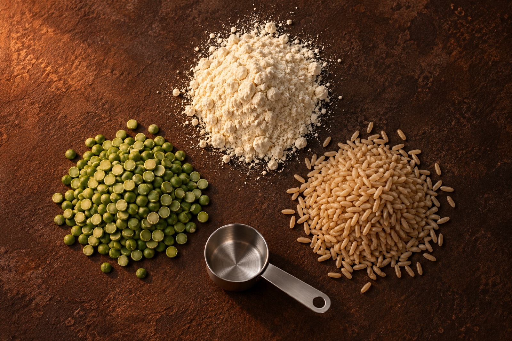

Everything printed on the back of the pack, retyped here so you can read it before you buy instead of after.

Most protein in India is sold on a number shouted from the front of the pack. Turn it over and the number stops making sense. We decided the back of our pack would be the marketing.
22.5 g of protein and 4.4 g of fibre in a 50 g serving. Garcinia Cambogia at 416.67 mg, Cissus at 75 mg. Amounts, not adjectives — a “blend” with no milligrams behind it tells you nothing.
It is sweetened with sucralose and acesulfame potassium, and that is printed on the front. The soy fat powder carries sodium caseinate, so it is not dairy-free. You should not have to find that out later.
Not for pregnant, nursing or lactating women, children under 5, adolescents or the elderly without medical advice. That line is on the box because it is true, not because a regulator made us print it.
Chocolate, Mango and Kulfi are the same mix with a different flavour. No “advanced” version at a higher price, no flavour quietly carrying less protein than the one beside it.
50 g into 250 ml of water, stirred with a spoon. If a product needs a ₹900 shaker to be drinkable, the product is the problem.
Made by Zeon Lifesciences in Paonta Sahib under FSSAI licence 10013062000225. Both licence numbers and the batch code are on every pack, so a problem can be traced to the week it was made.
Soya protein isolate is the first ingredient on the label, followed by pea protein, and brown rice protein further down. All three are declared by name on the pack.
The fibre comes from soya fibre and FOS: 8.8 g per 100 g, which is 4.4 g in a serving. One gram of that is fructo-oligosaccharide.
It is a plant formulation, but it is not dairy-free: the soy fat powder carries sodium caseinate, which comes from milk. The pack declares soy as the allergen and names the facility's other lines.
The same panel is printed on all three flavours.
| Nutrient | Per 100 g |
|---|---|
| Protein | 45 g |
| Energy | 400.6 kcal |
| Carbohydrate | 26 g |
| Total sugars | 2.23 g |
| Added sugars | 0 g |
| Dietary fibre (incl. FOS) | 8.8 g |
| Total fat | 11 g |
| Saturated | 2.71 g |
| Monounsaturated | 3.13 g |
| Polyunsaturated | 5.16 g |
| Linoleic acid | 4.65 g |
| Trans fat | 0.025 g |
| Sodium | 350 mg |
That is the wording on the pack. One serving a day, or as directed by a physician, certified dietitian or nutritional professional — and not more than that.
It is not for pregnant, nursing or lactating women, children under 5, adolescents or the elderly, unless a doctor says otherwise. It is not intended to treat, cure, mitigate or prevent any disease.
α-amylase, protease, lipase, cellulase and lactase. All five are named individually on the pack.
Fructo-oligosaccharides, 1 g of the 4.4 g of fibre in a serving. Declared separately from the rest of the fibre on the panel.
Garcinia Cambogia extract (60% HCA) at 416.67 mg a serving, of which 250 mg is hydroxycitric acid, and Cissus Quadrangularis at 75 mg. Both amounts are printed on the pack.
Sucralose (INS 955) and acesulfame potassium (INS 950). That is how you get 22.5 g of protein at 200 kcal without added sugar. Named on the front, not buried.
A, D3, E, K1, B1, B2, B3, B5, B6, B12, C, folic acid, biotin, plus calcium, magnesium, potassium, phosphorus, iron, zinc, copper, chromium, selenium, manganese, molybdenum and iodine.
Contains soy, and the soy fat powder carries sodium caseinate, which is milk-derived. Made in a facility that also processes wheat, milk, oats and nuts. If any of those are a problem for you, this is not your product.
Manufactured by Zeon Lifesciences Ltd at Paonta Sahib under FSSAI licence 10013062000225. Marketed by Shiv Protein Private Limited out of Darya Ganj, Delhi.
Both licence numbers are on every pack. If something is wrong with a batch, the number on the box is how you and we find it.